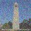
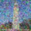

Random seed for this project: 182
In this part we use the DeepFloyd IF text-to-image model. Below are some sample outputs from stage 1 and stage 2 of this model using the null prompt "a high quality photo".
Prompts:
"an oil painting of a snowy mountain village"
"a man wearing a hat"
"a rocket ship"
Stage 1 outputs (num_inference_steps = 10):
Stage 2 outputs (num_inference_steps = 10):
Stage 1 outputs (num_inference_steps = 200):
Stage 1 outputs (num_inference_steps = 200):
Discussion:
The results for both inference steps closely match the prompts. This model had a little bit of trouble
making the snowy village look like an oil painting, but it does look mostly like a painting.
Ragarding differences betweein 20 vs 200 inferences steps, the outputs with more inference steps
were on average more detailed and sharper. The rocket, for example, looks more close to a real rocket
drawing that someone would make with more inference steps. There is also more detail with the the sky.
The animals in the snowy village picture for the 200 inference output do not look real. It was clear
the model was trying to render deer, but the details are a bit off.
Our first step to implement the diffusion loop is to create the forward process which adds noise to an image. For this we compute the following:

Where:
-x_t is the noisy image
-x_0 is the clean image
-alpha_t_hat is the noise coefficient at time t
This process not only adds noise to the image, but it also scales it.
Below are results of the forward process on different levels of t.
Original:
t = 250:
t = 500:
t = 750:

Since noise is primarily made up of high frequencies, one way to denoise without learning is to remove the high requiencies from the image. We achieve this by applying a gaussian filter to the image.
Noisy t = 250:
Smoothed t = 250:

Noisy t = 500:
Smoothed t = 500:
Noisy t = 750:
Smoothed t = 750:
Clearly, this naive smoothing does not do a very good job. While the noise is smoothed out somewhat, the picture is also blurred, so we lose a lot of information. In the next step we will investigate a better way.
In this part we apply one-step denoising using a pretrained UNet. This UNet was pretrained with tons of data comparing original and noisy images. Given a noisy image, the model finds an estimate for the noise. Then we estimate a clean image by scaling this noise estimate using alphas_cumprod and subtracting it from our noisy image.
Here's the original image for reference:
Original:
Noisy t = 250:
Smoothed t = 250:
Noisy t = 500:
Smoothed t = 500:
Noisy t = 750:
Smoothed t = 750:
Single-step denoising works pretty well. However, it turns out we can get better results by iteratively denoising an image. This involves remove a little bit of noise across multiple timesteps until we arrive at a clean image. In order to optimize this process, we use strided timesteps in order to save time. Each iteration in this process, we estimate the noise from one step to the next and subtract just that. Eventually we arrive at our estimate of the clean image.
Noisy Campanile t = 690:
Noisy Campanile t = 540:
Noisy Campanile t = 390:
Noisy Campanile t = 240:
Noisy Campanile t = 90:
Original Campanile:
Iteratively Denoised Campanile:
One-step Denoised Campanile:
Gaussian Blurred Campanile:
In this part we perform the same exact operations as the previous section, but this time we start with pure noise. That means we don't control what the output image will be, but the model will force the output to be in the high quality image manifold, making for interesting results.
Below are five sampled images:
We can see that some of these images look like they could be real, but some of them also look unconvincing. In the next part we'll work to improve these.
In this part we try to guide our output image. We do this by computing a conditional and an unconditional noise estimate and allowing our new formula to be:

Where epsilon_u and epsilon_c are the estimated noise for the unconditional prompt and the conditional prompt respectively. Gamma is a hyperparameter that we can control. To get the conditional and unconditional estimates, we get the output of the UNet for both a given prompt and an empty prompt. With a gamma value greater than 1, we see increased quality for generated images. For this project I used gamma=7. Below are five sampled images using CFG.
Clearly these results are much higher quality when compared to section 1.5.
In this part we generate images in the same way we did in the previous part, but this time starting at different noise levels following the SDEdit algorithm. What we see is a relatively smooth transition from a fully made up image to the Campanile, which is our inputed image.
In this part, we apply the same steps as before, but on non-realistic images to see how the model transition into the real-image manifold.
Spongebob:

Drawing of a flute:

Drawing of a baby:

In this part I implement inpainting, which is a way to mask out only a certain section of the image and allow the model to hallucinate something there. For example, we can create a mask blocking the top of the Campanile and allow the model to replace it with something else.
Campanile:


Superman:


Violinist:


In this part we do the same as before, but with a text prompt other than "a high quality image" for the conditional prompt. We see that the progression of images is consistent to the prompt and to each other.
Prompt: "a rocket ship"

Promp: "a photo of a dog"

Prompt: "a pencil"

In this part, we make the model generate two images at the same time with one of them being flipped. Combining their noise profiles, we're able to generate images that are anagrams. The formula is as follows:

Essentially we run our iterative CFG method as before, but with two images at the same time. One of the images is flipped then fed into the model to get a flipped noise estimate. Once we average the noise estimates from the outputs of each model we can feed the estimated clean image to the next iteration.
"an oil painting of people around a campfire" and "an oil painting of an old man"

"a lithograph of waterfalls" and "a photo of a dog"

"an oil painting of a snowy mountain village" and "a lithograph of a skull"

In this part we create hybrid images, like in project 2. A hybrid image is one that displays one image when viewed up close, and a different image when viewed from a far. We do this by applying a lowpass filter to the noise estimate of one of the images, and applying a highpass filter to the other. The method here is very similar to the previous part, with our model finding the noise for two images at the same time, and then the final noise estimate is the sum of the low-passed first image and high-passed second image.
Prompts: "a lithograph of waterfalls" and "a lithograph of a skull"

Prompts: "a rocket ship" and "a photo of a hipster barista"

Prompts: "a man wearing a hat" and "a lithograph of a fjord"

In this part I implemented the UNet as per the spec:

Where some of the operations are detailed below:

In this part I visualize the forward process of different images at different levels of sigma. Below, for each number, I show the noise progression from sigma = [0.0, 0.2, 0.4, 0.5, 0.6, 0.8, 1.0] from left to right.


Now we actually train the UNet to denoise MNIST images. We train the model to denoise images with only noise level sigma=0.5. I used a batch size of 256 and a learning rate of 0.0001 using the Adam optimizer. To calculate the loss, I used mean squared error on the difference between the output of our model to a clean image. The hidden dimension was 128. Below is a training loss curve for five epochs:

Here are results after one epoch:
Input images:

Noisy images:

Denoised:

Here are results after five epochs:
Input images:

Noisy images:

Denoised:

We see that after five epochs, there is more noise removed and the numbers are clearer
Here we test our denoising on other levels of sigma besides 0.5.
From left to right are results at sigma (noise) levels [0.0, 0.2, 0.4, 0.5, 0.6, 0.8, 1.0]


In this part I train a diffusion model that generates new MNIST images from random noise.
In this part I implemented DDPM. The loss function for this part is the mean squared error between the estimated noise and the actual noise. In order for this to work, we need some sort of notion of time in our model. This is because the forward process relies on constants, alpha_bars that depend on time. In order to incorporate time, we use fully connected layers and add them into our original model. This effectively injects our scalar time, t, into model, allowing for it to learn how to parameterize a time encoding. Below are the diagrams for the modified network.

Where the structure of an FCBlock is below:

In order to train the UNet we use the algorithm below:

In training, I used a batch size of 128 and a hidden dimension of 64. The learning rate was 0.001 with a learning rate scheduler, decaying the rate by 1.0^(1.0/num_epochs) at each epoch. The loss is the mean squared error of the difference between the estimated noise and the actual noise.
Here is the training curve after 20 epochs:

To sample we use the algorithm below:

This matches our iterative procedure from part A. We start with a fully noisy image. At each timestep, we estimate a cleaner image by subtracting the estimated noise from our model from the current noisy image. Then we set the next iteration's noisy image to be the current clean estimate. We repeat this for every timestep. Note that the alphas, alpha_bars, and betas are precomputed.
Here are results after 5 epochs:

Here are results after 20 epochs:

The results do resemble numbers, but some of them are completely illegible. In the next part we find a way to make these generations better.
In order to improve our generated images, we can add class-conditioning to the model. To do this, we one-hot-encode the class of a datapoint into the model and use an FCBlock to integrate it into the model. Whereas before we added the time-conditioning to the desired block, with class-conditioning, we multiply.
The training algorithm is as follows:

Here's the training curve after 20 epochs:

Sampling is very similar to the time-conditioned case. The only difference is that we add CFG as well as adding the actual class information into the model.
Results after 5 epochs:

Results after 20 epochs: